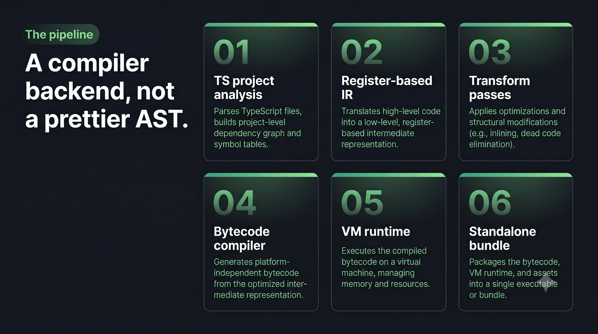
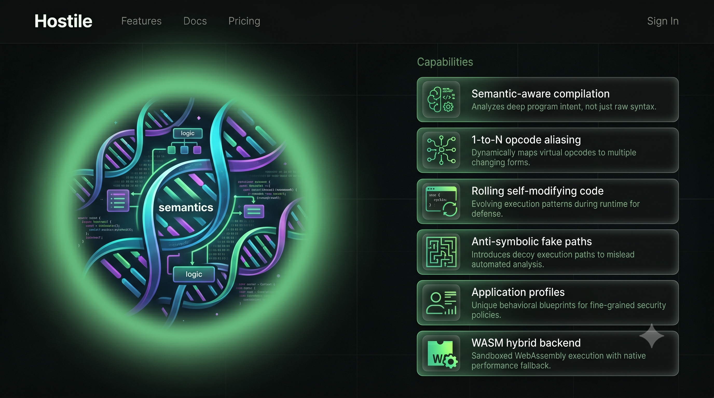

TypeScript compiler backend / selective virtualization
Turn critical logic into hostile bytecode.
TSXobf lowers selected functions into register IR, applies hardening passes, and emits a standalone polymorphic JavaScript VM.
Compiler pipeline
A backend for selected logic, not a prettier AST.
Each phase has a narrow job: preserve semantics, hide structure, then package execution behind a custom VM runtime.
Project analysis
Resolve modules, exports, scopes, and typed symbols through the TypeScript Compiler API.
Semantic graph
Find virtualized regions and retain enough context for safe lowering.
Register IR
Lower supported statements into explicit control flow and register operations.
Transform passes
Apply string pools, symbol indirection, fake paths, and virtualization passes.
Bytecode compile
Encode encrypted instructions with aliasing, remapped opcodes, and constants.
VM generation
Emit indirect dispatch handlers and the standalone runtime bundle.

Runtime cockpit
Bytecode, handlers, constants, and rolling recovery in one frame.
Indirect threaded dispatch
handler = handler(ctx)
Handlers return the next handler reference, avoiding a plain opcode switch loop.
Shadow XOR Mask Buffer
xorLog[pc] ^= mask
Per-execution bytecode clones recover logical opcodes after rolling corruption.
JIT constant pool
pool[k] = decode(k)
Strings, properties, and literals are decrypted lazily at runtime.
Trap-backed fake paths
(3*x*x+5*x+7)%4
Opaque congruence keeps the real path valid and the fake branch hostile.

Threat model
Security posture, stated plainly.
Virtualization raises reverse-engineering cost. It is not a cryptographic boundary.
Naive static analysis
AST deobfuscators lose the original structure, literals, names, and direct control flow.
Automated emulation
Rolling bytecode and fake paths increase tracing work but do not stop determined execution tracing.
Manual devirtualization
A skilled reverser can recover behavior with enough time. Protect only high-value logic and rotate builds.
Syntax support
Wide TypeScript coverage with explicit limits.
Loops, switch, throw, delete, calls, new, for-in, for-of
Destructuring, rest, spread, sparse arrays, computed keys
Closures, nested functions, this, new.target, generators
Async paths, base classes, decorators, wasm-hybrid bridge
Derived classes, super, static blocks in verified VM path
Unsupported AST forms fail loudly instead of silently miscompiling
Quick start
Clone, build, and protect one function.
Use the sample project first. It gives you a fast semantic-equivalence check before you protect your own code.
Open repository$ git clone https://github.com/philleyquattro317-arch/ts-vm-obfuscator.git
$ cd ts-vm-obfuscator
$ pnpm install
$ pnpm build
$ node packages/cli/dist/cli.js -p examples/basic-ts/tsconfig.json --out dist-obf --profile generic
$ node test-pipeline.jsMIT licensed / no telemetry / no backend